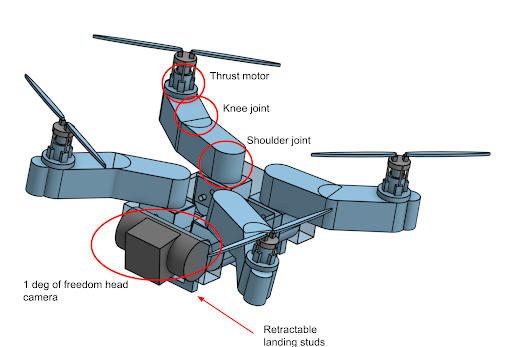
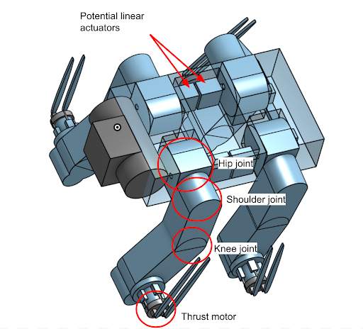
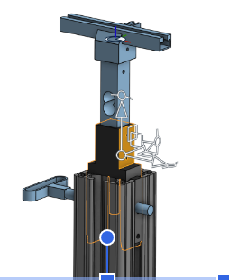

DogCopter is a project I started and led for the Autonomous Robotics club. I always wanted to create an all-terrain vehicle but knew I couldn't do it alone, so I joined the Autonomous Robotics Club and started DogCopter.
Club Website Here
Aside from being the project manager where I plan timelines/outlines, assist my team, and do check-ins, I would have to research and get an understanding of the project. DogCopter contains a multitude of aspects (Mechanical, Aerospace, Electrical, Controls, Autonomy, Optimization, Vision) that need to be accounted for, and I need to get a solid enough understanding in all aspects and put them all together. As for what the overall design looks like, see the images here:
 In DogCopter, this is one of the most important stages in the beginning. Since we are dealing with flight + walking, it's important to optimize battery life and with so many parts to choose from, designs, there is a multitude of options to choose from. With this, I came up with a solution to look for it(I later learned this is similar to linear programming). I started off by creating a Matlab program where I would define constraints that need to be fulfilled, such as weight, walk time, flight time, flight-thrust ratio, etc. Then run for loops through every part combination and see what fulfills the needs. Though when calculating the constraints, some aspects require more complex math such as with estimating walk estimation, we make use of Bézier curves for walk path and for Aero, do physical tests with a thrust stand.
Since we don't know the best combination of propellers, thrust motors, and ECS. We figured the best thing to do in order to obtain thrust values was to build a thrust stand. Me and another person on the team worked on designing and fabricating a simple thrust stand. Our goal was to mimic real conditions as closely as possible.
After some feedback, we realized this design would be harder to manufacture, so we greatly simplified it to this
and assembled and tested with a motor + ESC + Arduino
We still need to test more combos
For mechanical, we worked on coming up with mechanisms and general body design. Since we had a new mechanical team, new work that went into was getting them experience with creating a simple robot dog.
This was then printed, and they got an idea of how to fine-tune the mechanisms. Afterwards, they began to prepare for creating a mini model and created a CAD model of it
Socials